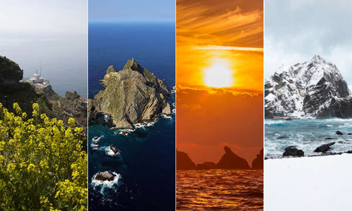

태고의 신비를 간직하고 있는 독도의 자연을 소개해 드립니다.
대한민국의 아름다운 섬, 독도

기온과 강수량
독도의 기후는 난류의 영향을 많이 받는 전형적인 해양성 기후로 연평균기온이 12.4℃, 가장 추운 1월 평균기온이 1℃, 가장 더운 8월 평균기온이 23℃로 비교적 온난한 편이다. 바람이 많은 독도의 연평균 풍속은 4.3m/s로 남서풍이 우세한 반면 겨울에는 북동풍이 우세를 보이고 있다.
독도는 안개가 잦고 연중 흐린 날이 160일 이상이며 강우일수는 150일 정도로 연중 85%가 흐리거나 눈˙비가 내려 비교적 습한지역이다. 연평균강수량은 1,383.4mm, 겨울철 강수는 대부분 적설형태이며 폭설이 많이 내리는 것이 특징이다.
